Platform
GM A-body
40 generations of 20 models by Oldsmobile, Pontiac, Buick, Chevrolet and GMC, 1938–1996.
The cars
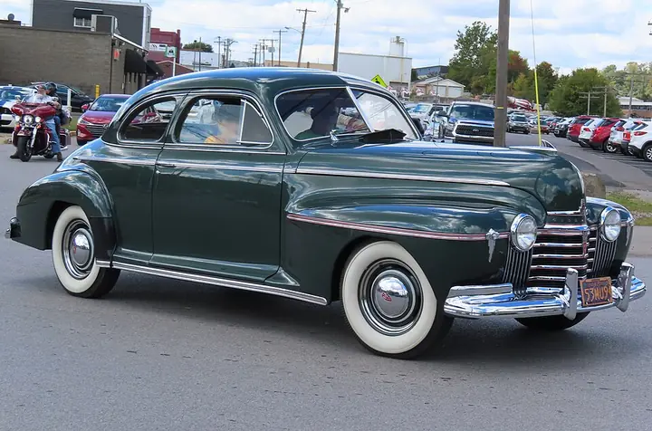
Oldsmobile Series 60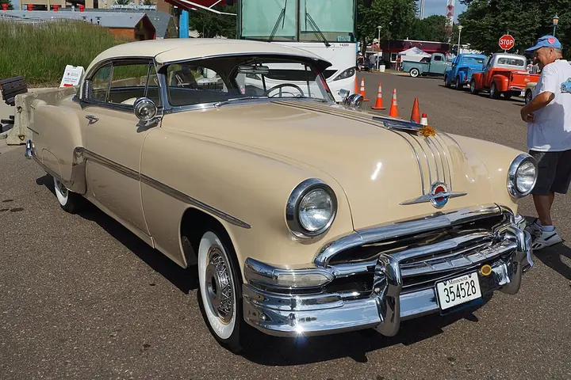
Pontiac Star Chief · First generation (1954)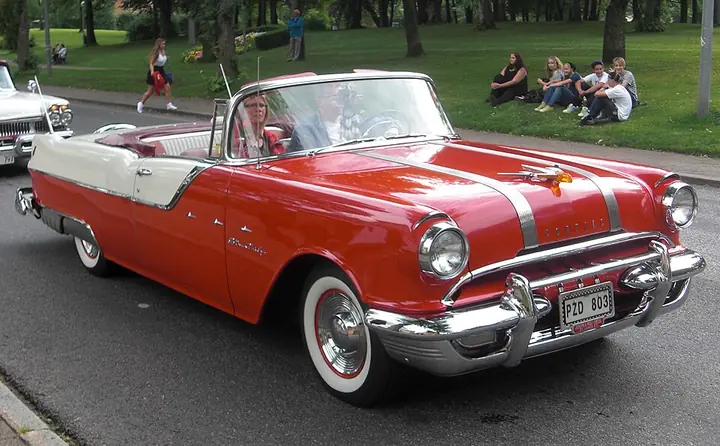
Pontiac Star Chief · Second generation (1955-1957) Buick Skylark · Second generation (1964–1967)
Buick Skylark · Second generation (1964–1967) Buick Sport Wagon
Buick Sport Wagon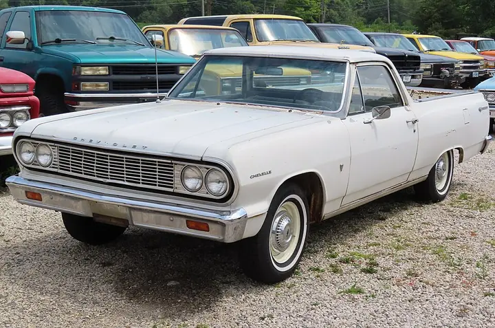
Chevrolet El Camino · Second generation (1964–1967) Oldsmobile 442 · First generation
Oldsmobile 442 · First generation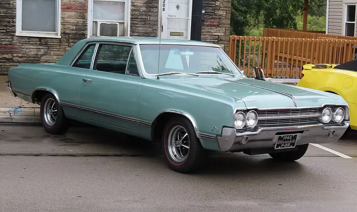
Oldsmobile Cutlass · Second generation (1964)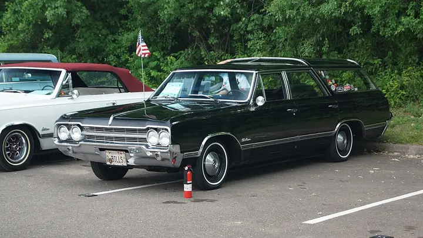
Oldsmobile Vista Cruiser · First generation (1964–1967)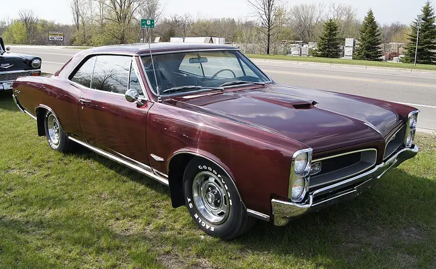
Pontiac GTO · First generation (1964–1967)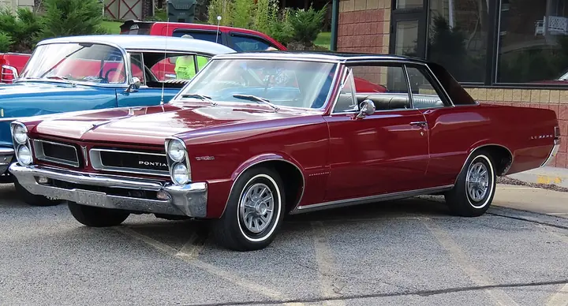
Pontiac LeMans · Second generation (1964–1967)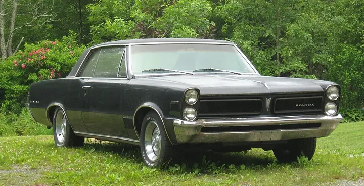
Pontiac Tempest · Second generation (1964–1967)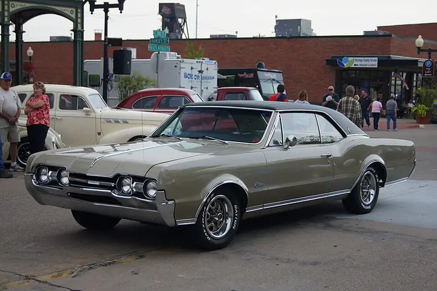
Oldsmobile Cutlass Supreme · First generation (1966–1967) Buick Skylark · Third generation (1968–1972)
Buick Skylark · Third generation (1968–1972)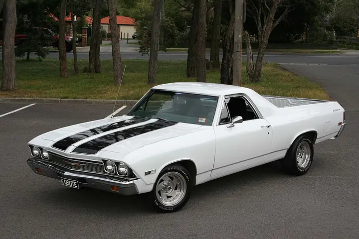
Chevrolet El Camino · Third generation (1968–1972)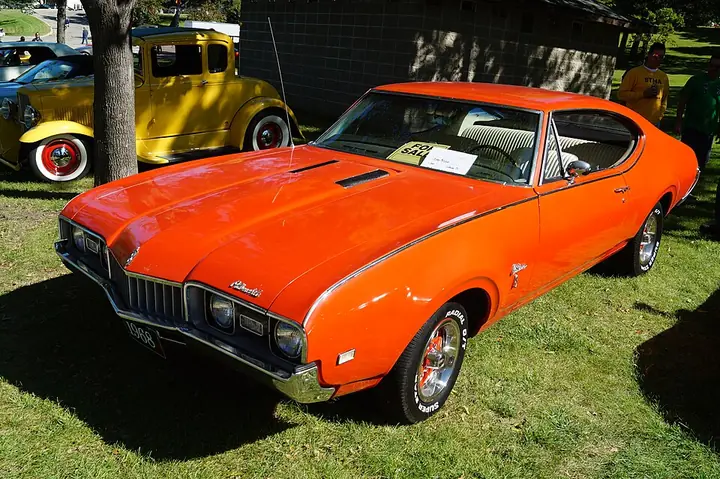
Oldsmobile Cutlass · Third generation (1968)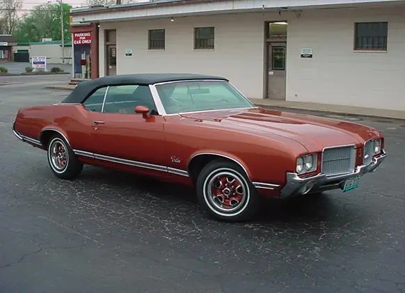
Oldsmobile Cutlass Supreme · Second generation (1968–1972)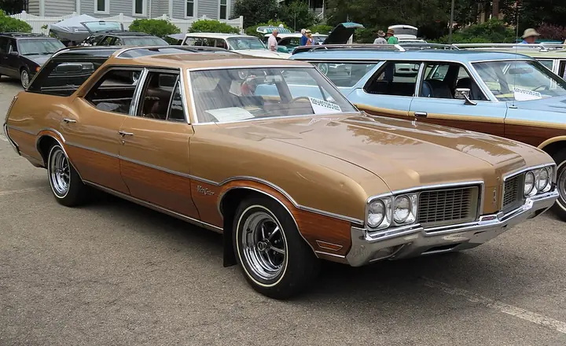
Oldsmobile Vista Cruiser · Second generation (1968–1972)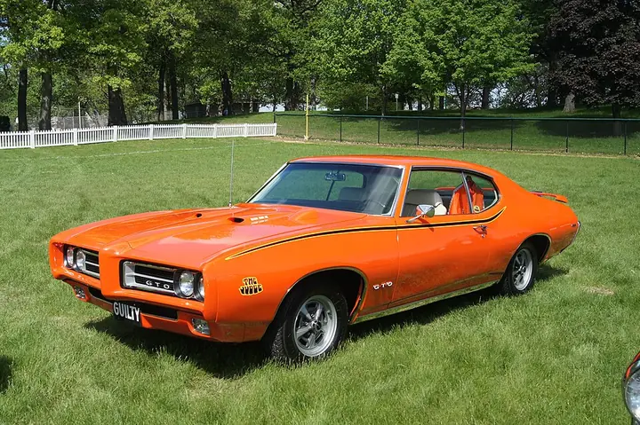
Pontiac GTO · Second generation (1968–1972)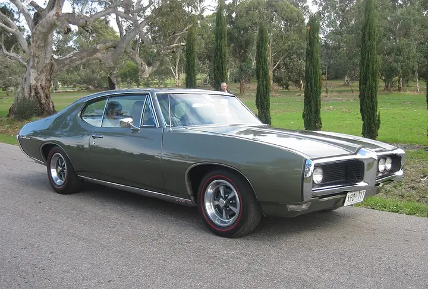
Pontiac LeMans · Third generation (1968–1972)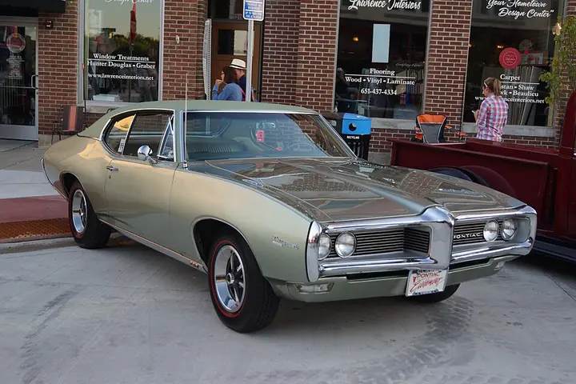
Pontiac Tempest · Third generation (1968–1970)- Chevrolet Monte Carlo · First generation (1970–1972)
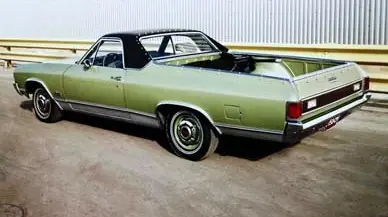
GMC Sprint · First generation (1971–1972)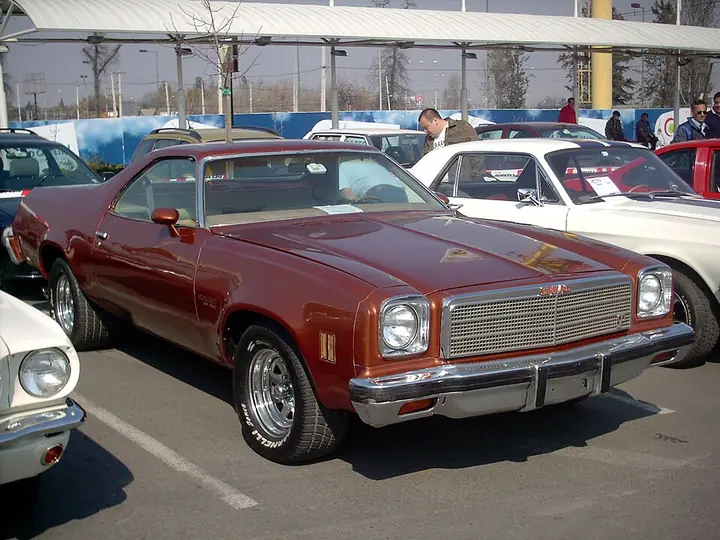
GMC Sprint · Second generation (1973–1977)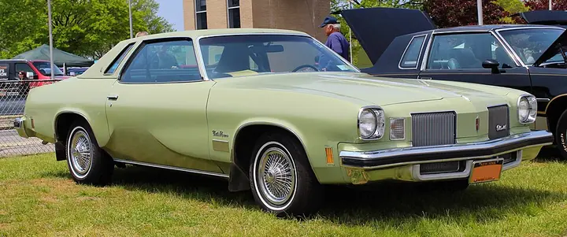
Oldsmobile Cutlass Supreme · Third generation (1973–1977) Buick Century · Third generation (1973–1977)
Buick Century · Third generation (1973–1977)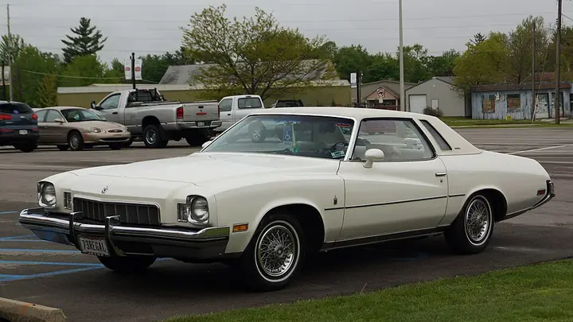
Buick Regal · First generation (1973)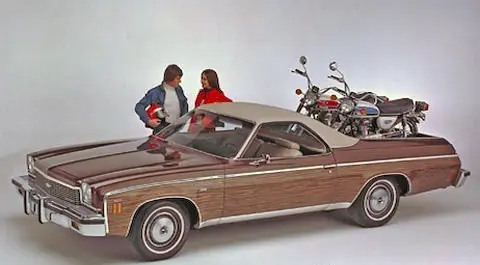
Chevrolet El Camino · Fourth generation (1973–1977)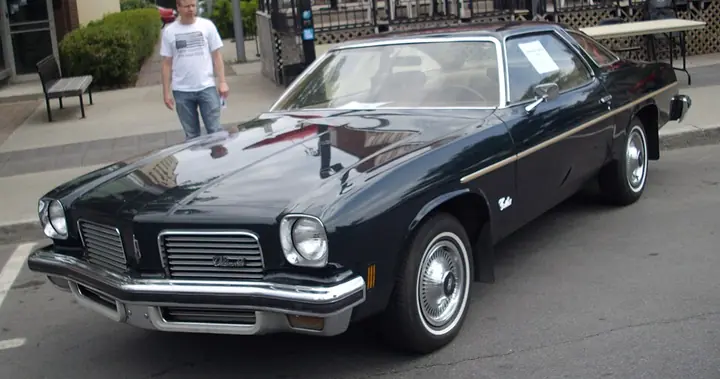
Oldsmobile Cutlass · Fourth generation (1973)- Oldsmobile Vista Cruiser · Third generation (1973–1977)
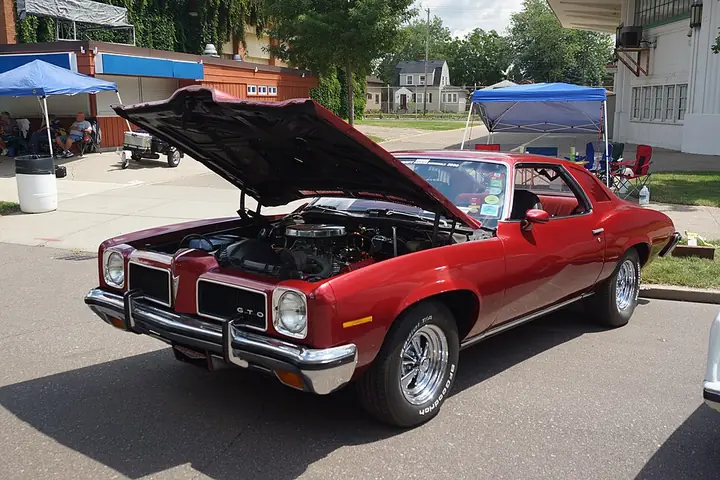
Pontiac GTO · Third generation Pontiac LeMans · Fourth generation (1973–1977)
Pontiac LeMans · Fourth generation (1973–1977)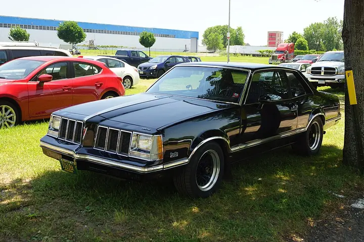
Pontiac Grand Am · Second generation (1978–1980) Buick Century · Fourth generation (1978–1981)
Buick Century · Fourth generation (1978–1981)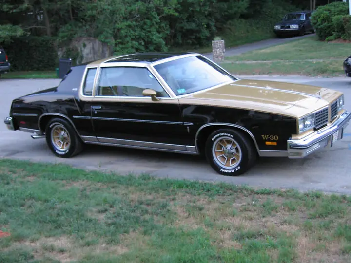
Oldsmobile 442 · Fourth generation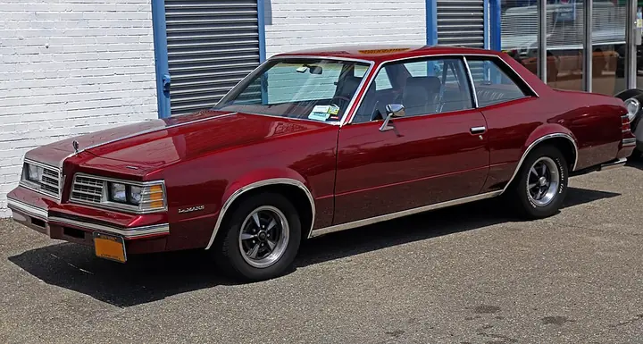
Pontiac LeMans · Fifth generation (1978–1981) Chevrolet Celebrity
Chevrolet Celebrity Oldsmobile Cutlass Ciera
Oldsmobile Cutlass Ciera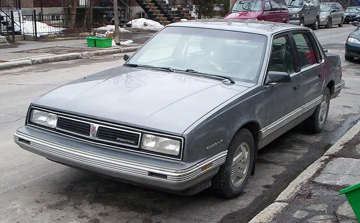
Pontiac 6000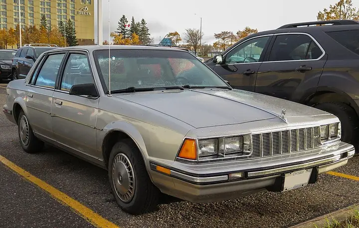
Buick Century · Fifth generation (1982–1996)